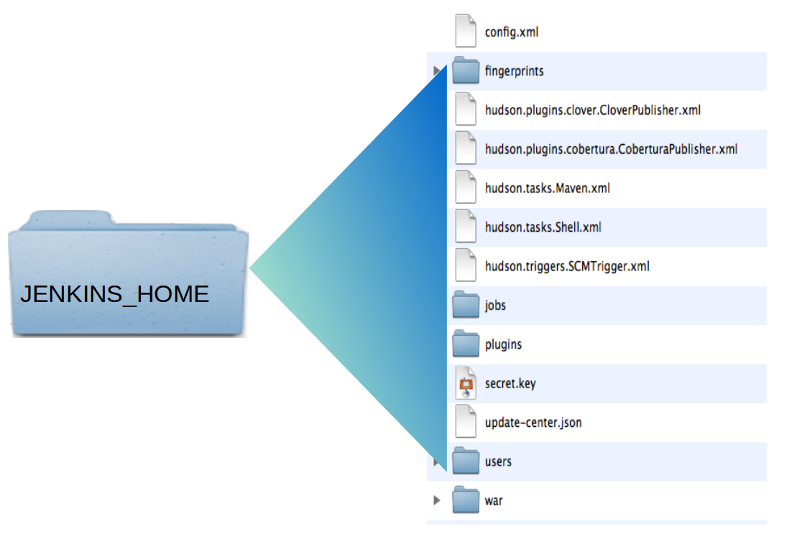

Kobe Bryant Shot Selection
Pour mon premier article, je vous propose de vous partager un sujet recoupant deux de mes centres d'intérêts ;-). Etant un amateur de basket-ball mais aussi de machine learning, je vous propose de vous présenter les travaux que j'ai pu réaliser pour la compétition kaggle : Kobe Bryant Shot Selection.
Le but de cette compétition est de prédire la probabilité de réussite aux tirs de Kobe Bryant. Pour ce faire, nous disposons de l'ensemble de ses shots de sa carrière. Ces derniers sont représentés suivant un grand nombre de variables que nous verrons par la suite. Seule une variable est importante à ce stade : shot_made_flag qui nous dit si le shot a été réussi ou non. Elle a pour valeur 0 ou 1 et représente une probabilité. Pour mettre en place la compétition, kaggle a retiré l'information shot_made_flag de 5000 tirs au hasard et à nous d'estimer cette probabilité.

Chargement des données
library(ggplot2)
library(dplyr)
library('png')